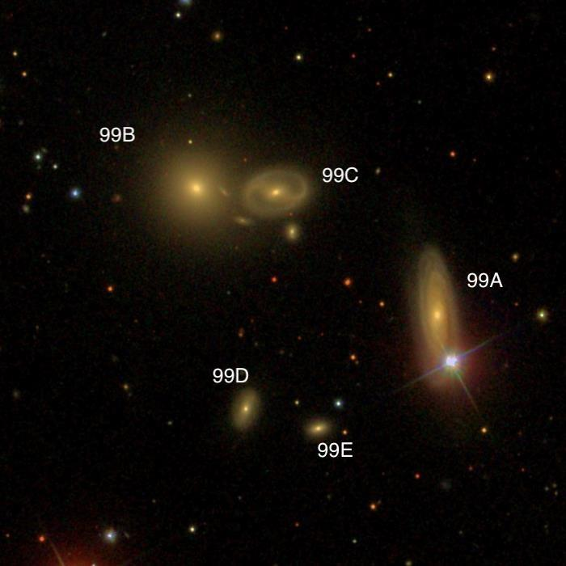
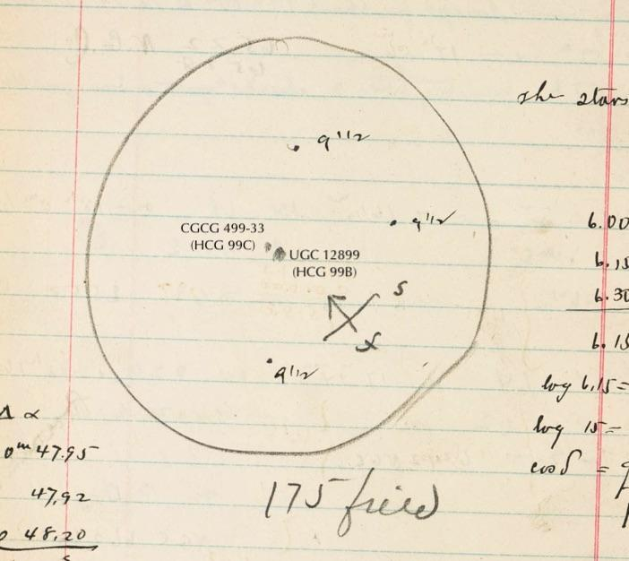
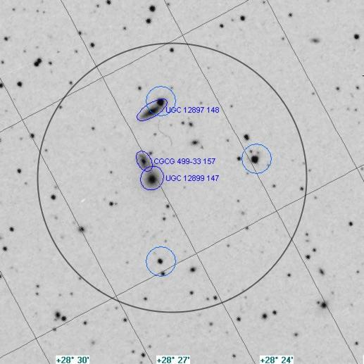

Hickson Compact Group (HCG) 99
- Name: Hickson Compact Group 99
- Members: 5
- Diameter: 2.3'
- Magnitude: V ~ 13.7 to 16.6
- Distance: 400 million l.y.
- RA: 00h 00m 43.7s
- Dec: +28° 23' 20"
- Constellation: Pegasus

Hickson Compact Groups (HCG) have always been among my favorite deep sky targets. The catalogue contains 100 compact groups, published by Paul Hickson in 1982 based on the POSS1. All groups contain at least 4 members (though many have a "member" in the foreground or background) and satisfying criteria for compactness and isolation. It is always fascinating to see several galaxies packed into a tiny space. And HCGs provide a seemingly endless number of challenges -- there's always a dim member or two (maybe more!) that eludes me, but that's the fun. You can always hope with better conditions (or perhaps a bit more aperture) you'll snag that elusive member.
Several of the more famous groups have been chosen as OOTW: Stephan's Quintet (HCG 92), Seyfert's Sextet (HCG 79), Copeland's Septet (HCG 57), and HCG 68.
HCG 99 lies within the great square of Pegasus, just 1.8° WSW of Alpheratz (Alpha Andromedae) and 11' west of 6.8-magnitude HD 224895. The 5 members probably form a physical group at 300 million light years, although the redshifts vary by about 10%. The easiest member due to its high surface brightness is HCG 99B (UGC 12899), with a V magnitude of 13.7 and should be visible in 8". HCG 99C (CGCG 499-33) is attached at the west end, only 0.6' between centers, making a striking close pair.
I wrote an article that just came out in the November issue of Sky & Tel on the unknown discoveries of E.E. Barnard while he was observing with a 12-inch refractor at Lick Observatory. Guess what? Barnard discovered HCG 99B and 99C visually in January 1889. As his primary interest was searching for comets, he never measured an accurate position or published the discovery -- otherwise, these two galaxies would have IC designations (the NGC had just been published). But along with other members of the group, they weren't known until the galaxy surveys in the 1960's based on the POSS1.
Interestingly, Barnard missed HCG 99A, which is the largest member of the quintet but is masked by an 11th magnitude star at its south end. In my 18", I described it as a "very faint, phantom streak extending north of a mag 11 star. Not noticed initially (picked up HCG 99B first), but once detected was fairly easy to view, although the brighter attached star detracted from viewing."
Tiny HCG 99D and 99E are much smaller and more challenging. At 16th magnitude, HCG 99D is a nice challenge for an 18" scopes under dark skies. In my 24", I called it "extremely faint and small, round, ~10" diameter." At V = 16.6, HCG 99E is the smallest and faintest member of the quintet and would only pop in my 24" as a barely non-stellar speck.
If you take a look at HCG 99, also check out 14th magnitude CGCG 499-026 about 13' SW. It shares the same redshift with HCG 99, so is probably a member of the same group. An uncatalogued unequal double star is off its east end (6" separation) and 3' east of CGCG 499-026 is 15th magnitude LEDA 1831453, a low surface brightness spiral.
As always,
"Give it a go and let us know!
Good luck and great viewing!"
Steve's follow-up — September 26th, 2020, 10:11 PM
Barnard generally only made very rough diagrams to indicate the position of nebulae, but here's his diagram, along with a similarly rotated DSS1 image (MegaStar) to show his 3 stars (indicated as mag 9.5 but much fainter) and the close pair he discovered (HCG 99B and 99C). The mag 9.5 star at the top of his diagram is attached to HCG 99A.

